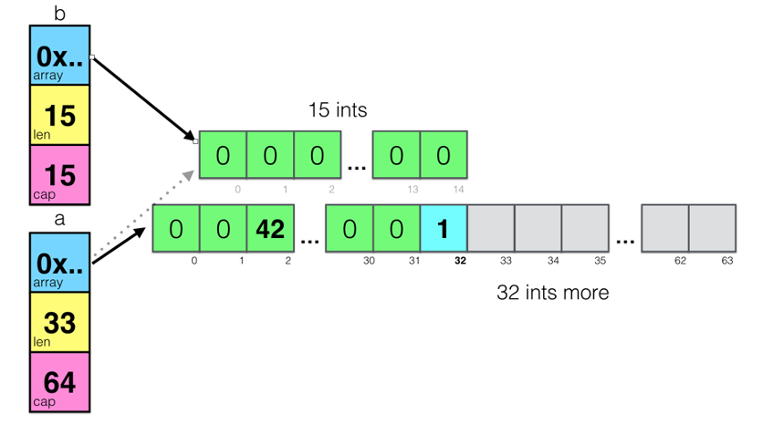

基础概念
在本篇文章中，会对Go语言编程模式的一些基本技术和要点，这样可以让你更容易掌握Go语言编程 其中，主要包括，数组切片的一些小坑，还有接口编程，以及时间和程序运行性能相关的话题
Slice
切片 这个东西在Go语言中不是数组，而是一个结构体，其定义如下：
type slice struct { array unsafe.Pointer //指向存放数据的数组指针 len int //长度有多大 cap int //容量有多大 }
用图示来看，一个空的slice的表现如下：

熟悉C/C++的同学一定会知道，在结构体里用数组指针的问题――数据会发生共享！
下面来看一下slice的一些操作：
foo = make([]int, 5) foo[3] = 42 foo[4] = 100 bar := foo[1:4] bar[1] = 99
对于上面这段代码：
- 创建一个foo的slice，其中的长度和容量都是5
- 对foo所指向的数组中的索引为3和4的元素进行赋值
对foo做切片后赋值给bar，再修改bar[1]

通过上图可以看到，因为foo和bar的内存是共享的，所以，foo和bar的对数组内容的修改都会影响到对方
接下来，再来看一个数据操作 append 的示例：
a := make([]int, 32) b := a[1:16] a = append(a, 1) a[2] = 42
上面这段代码中：
- 把 a[1:16] 的切片赋给到了 b ，此时，a 和 b 的内存空间是共享的
对 a做了一个 append()的操作，这个操作会让 a 重新分享内存 ，导致 a 和 b 不再共享 ，如下图所示：

从上图可以看以看到 append()操作让 a 的容量变成了64，而长度是33
需要重点注意一下：append()这个函数在 cap 不够用的时候就会重新分配内存以扩大容量，而如果够用的时候却不会重新分享内存
再来看一个例子：
func main() { path := []byte("AAAA/BBBBBBBBB") sepIndex := bytes.IndexByte(path,'/') dir1 := path[:sepIndex] dir2 := path[sepIndex+1:] fmt.Println("dir1 =>",string(dir1)) //prints: dir1 => AAAA fmt.Println("dir2 =>",string(dir2)) //prints: dir2 => BBBBBBBBB dir1 = append(dir1,"suffix"...) fmt.Println("dir1 =>",string(dir1)) //prints: dir1 => AAAAsuffix fmt.Println("dir2 =>",string(dir2)) //prints: dir2 => uffixBBBB }
上面这个例子中，dir1 和 dir2 共享内存，虽然 dir1 有一个 append() 操作，但是因为 cap 足够，于是数据扩展到了dir2 的空间。下面是相关的图示（注意上图中 dir1 和 dir2 结构体中的 cap 和 len 的变化）
如果要解决这个问题，只需要修改一行代码：
dir1 := path[:sepIndex]
修改为：
dir1 := path[:sepIndex:sepIndex]
新的代码使用了 Full Slice Expression，其最后一个参数叫 Limited Capacity ，于是，后续的 append() 操作将会导致重新分配内存